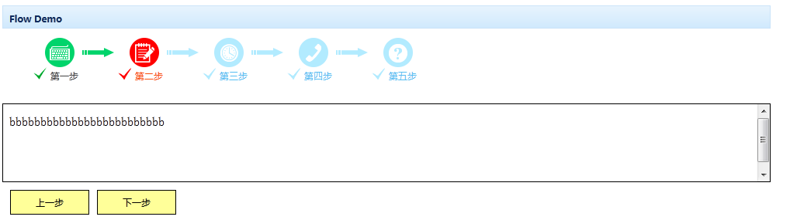

流程组件
使用$.fn.flow.defaults重载默认值
依赖关系
- 无
使用方法
创建微调器
使用html标签创建微调器，只须要对<input>标签引用'easyui-spinner'类。
例子：
<div class="kui-panel" title="Flow Demo" style="width:1000px;"> <div id="aa" class="kui-flow"kui-options='width:"1000",showIndex:2,panelHeight:100,stepNum:5,frameHeight:"100", imgPath:"../../frame/images/steps/", data:[{title:"第一步",url:"a1.html",img:"step-icon-pic1.png"}, {title:"第二步",url:"a2.html",img:"step-icon-pic2.png"}, {title:"第三步",url:"a3.html",img:"step-icon-pic3.png"}, {title:"第四步",url:"a4.html",img:"step-icon-pic4.png"}, {title:"第五步",url:"a5.html",img:"step-icon-pic5.png"}, {title:"第六步",url:"a6.html",img:"step-icon-pic6.png"}], clickCallblack:callBack'> </div> </div>
回调函数：
function callBack(){
var f = $("#aa").flow("getForm","#myForm");
//alert(f.find("input[name='userName']").val());
alert($("#aa").flow("getCurrStep"));
}
属性
| 名称 | 类型 | 描述 | 默认值 |
|---|---|---|---|
| frameHeight | number（数字） | iframe框架的高度 | auto |
| panelHeight | number（数字） | 内容区域高度 | auto |
| showIndex | 初始化显示的流程，默认第一步 | ||
| showButtom | boolean | 是否显示按钮 | true |
| width | number | 组件的宽度 | auto |
| stepNum | number | 总流程数量 | 0 |
| curStep | number | 当前流程数量 | |
| data | number | 流程数据 | |
| imgPath | string | 流程图标的路径,如D://IMG/ |
方法
| 名称 | 参数 | 描述 |
|---|---|---|
| clickCallBlack | 点击流程时的回调函数 | |
| getForm | 获得流程页面的form表单 | |
| resize | width | 重设组件宽度 |
| hideToolButtom | 隐藏按钮 | |
| showToolButtom | 显示按钮 | |
| disable | index | 指第几步不可点击流程图标 |
| enable | index | 指第几步可点击流程图标 |